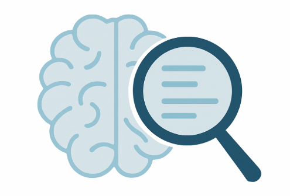
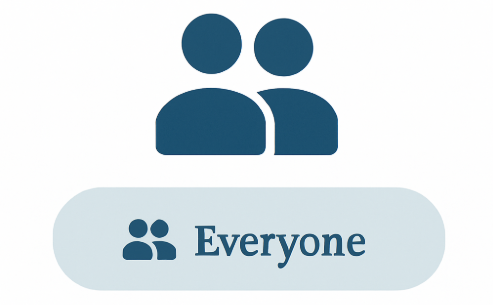
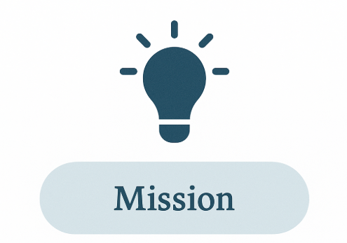

🧠 What is MisinfoDetector?
In an age dominated by digital information, it's becoming increasingly difficult to distinguish between fact and fiction. MisinfoDetector is an intelligent tool designed to help users identify and flag potentially false or misleading information online.
🚨 Why Misinformation Matters
Misinformation can have serious consequences—from influencing elections to spreading dangerous health advice. MisinfoDetector empowers users to question sources and analyze content critically.
⚙️ How It Works
Our model uses advanced NLP and machine learning to evaluate content credibility. It detects biased language, compares it to verified sources, and gives a real-time misinformation score.

👥 Who Can Use It?
Whether you're a student, journalist, or casual social media user, MisinfoDetector is built for everyone to promote digital literacy and responsible content sharing.

💡 Our Mission
We believe access to truthful information is a fundamental right. Our mission is to equip people with the tools they need to fight misinformation and build a safer online world.
